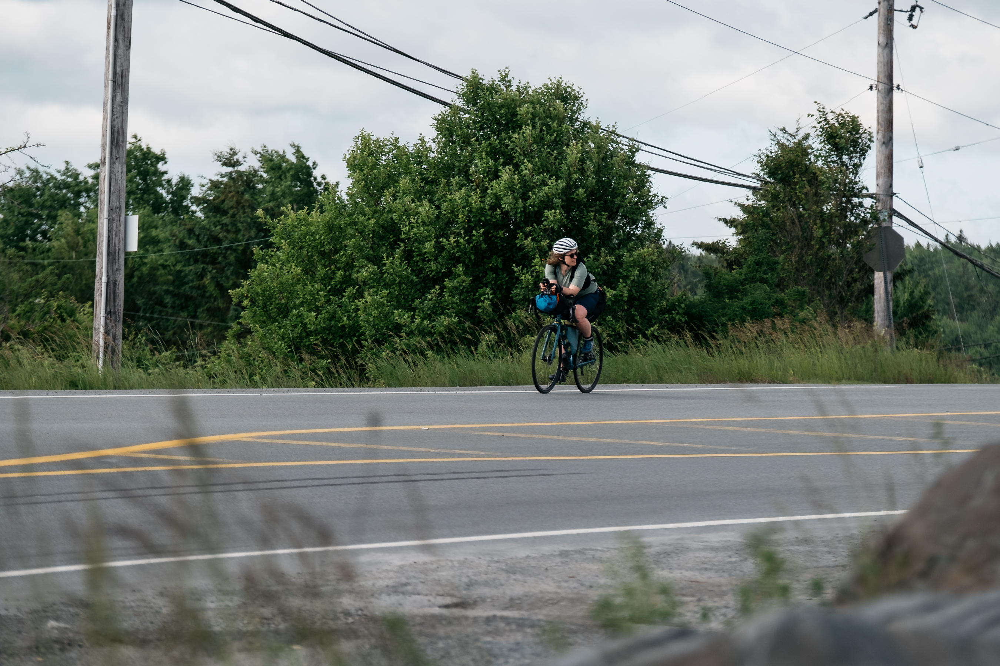

TIP 2 TIP!
750 KM 7,000+ M SOUTH → NORTH
Current Record Holders
The Route
This FKT is based on the honour system and GPS data. It follows a direct route from The Hawk Beach to the Meat Cove Campground sign. You can access the gpx file here.
All riders must travel south to north for this FKT.
The route is approximately 750 km. To account for GPS errors, a minimum distance of 747 km will be accepted. There is no cap on a longer route; however, it is in your best interest not to deviate too far from the original route.
Elevation: 7,000+ m
Previous attempts have recorded 7,270 m and 7,011 m of elevation gain. Differences are expected due to GPS error, construction detours, and resupply stops.
FKT Categories
There are two ways to attempt the Tip 2 Tip FKT: self-supported or supported.
There is a HUGE difference between the two. Whichever category you choose, you must follow it for the entire ride.
If you’re unclear about what counts as self-supported or supported, don’t hesitate to reach out with questions before your attempt.
Self-Supported
Do it all yourself!
There is no outside assistance. No support vehicles or people meeting you along the way. Get from A to B carrying your own gear and using services that are equally available to everyone.
No drafting behind another rider or vehicle.
Supported
A support vehicle and other outside assistance are allowed. Food, water, and supply drops are all OK.
You cannot draft behind the support vehicle or another rider.
Rules for an FKT Effort
Minimum distance is 747 km. Any detour must be the same length as, or longer than, the original route.
The ride must be recorded in full. Use a GPS device to record your route, distance, total time, and speed. Manually uploaded statistics are not accepted—you need a recording of your track. If you’re unsure whether your GPS device can be used, reach out before your attempt.
The clock never stops! Elapsed time is used for the FKT, not moving/ride time.
Resupply deviations are OK. Return to the route at the same point. If this isn’t possible because of construction or another closure, take a detour that is the same length as, or longer than, the original route.
Use the same bike for the entire ride.
Follow the rules of the road and respect other road users.
Wear a helmet at all times. Reflective clothing and equipment are highly recommended. You’ll be riding on busy highways for almost the entire route.
Safety
Every rider takes on risk when attempting this FKT. Be safe. Be smart.
Insurance through Cycling Nova Scotia is highly recommended in case an injury or accident occurs.
The Tip 2 Tip FKT is not a sanctioned event. It is an individual undertaking that can be attempted at any time of year and is open to anyone.
Planning an Attempt?
Please let the organizers of Tip 2 Tip NS know about your intention to ride at least two weeks before starting.
Take some photos, challenge yourself, and have fun!